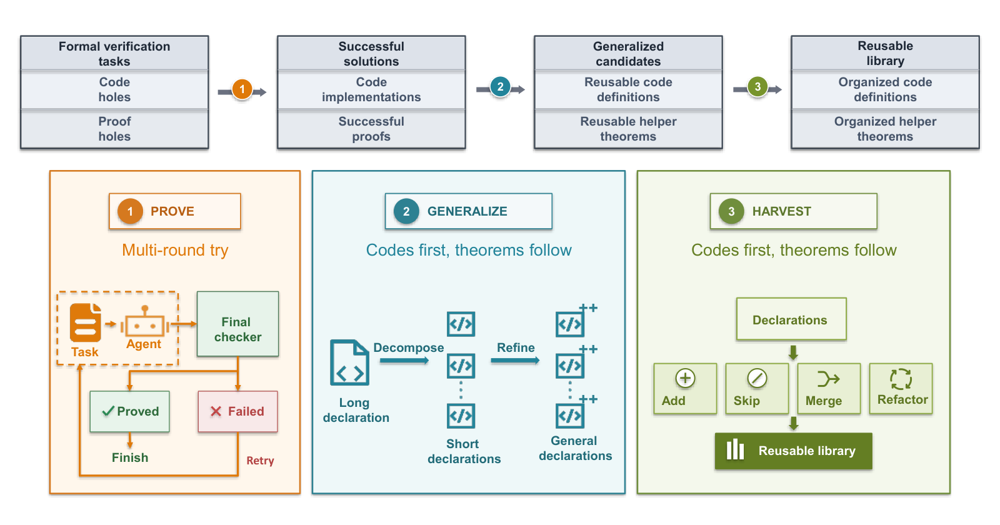

Builds Lean 4 software-verification libraries from LLM-generated, Lean-checked solutions, and evaluates them on Lean benchmarks (Verina, FVAPPS, VeriContest, VeriSoftBench).
Abstract
Software verification is typically more challenging than coding. Software developers routinely build on mature libraries and APIs, but turning successful verification solutions into reusable libraries still requires substantial expert effort. In this paper, we propose VeriBase, a framework for automatically constructing software-verification libraries by jointly generalizing code and its associated theorems from successful verification solutions. The key challenge is to generalize implementations together with the theorem statements and proofs that depend on these implementations, and reconcile overlapping components across verification tasks. To this end, VeriBase treats code and its associated theorems as declaration families, and designs a three-phase pipeline, which proves seed tasks, generalizes code and associated theorems, and harvests the resulting families into shared interfaces. VeriBase updates dependent declarations as interface change and uses Lean to check the resulting code and proofs. We evaluate VeriBase across four benchmarks with three backend LLMs. The results show that the general-purpose library built from independent 4,191 programs increases the average task success rate by up to 17.0% and meanwhile reduces the proof completion time by up to 21.4%. When VeriBase constructs a benchmark-specific library, further improvement can be observed.
Problem
Software verification takes more effort than coding, and turning successful verification solutions into reusable libraries still requires substantial expert work. The difficulty is generalizing implementations together with the theorems and proofs that depend on them, and reconciling overlapping components across tasks.
Approach
VeriBase treats code and its associated theorems as code-centered declaration families. It runs a three-phase LLM-agent pipeline (Claude Code harness): proving seed tasks to get Lean-validated solutions, generalizing code and theorems, and harvesting families into shared interfaces by adding, skipping, merging, and refactoring. Dependent declarations are updated as interfaces change, and Lean 4 checks all code and proofs, including checks for sorry and new axioms. A general library was built from 4,191 LeetCode/OpenCodeInstruct tasks translated to Lean 4, alongside benchmark-specific libraries.

Figure 2. Overview of VeriBase . VeriBase proves software-verification tasks to obtain Lean-validated solutions, generalizes them into code-centered declaration families, and integrates these families into a coherent library through addition, skipping, merging, and library-level refactoring. A workflow diagram showing \namecompleting tasks selected for library construction, generalizing successful
Results
The general library has about 54K lines of Lean 4 (4,848 declarations in 74 modules). It raises average task success by up to 17.0% and cuts proof completion time by up to 21.4% across three backend LLMs. Benchmark-specific libraries give further gains, e.g., up to 88.9% on Verina with GLM 5.2.